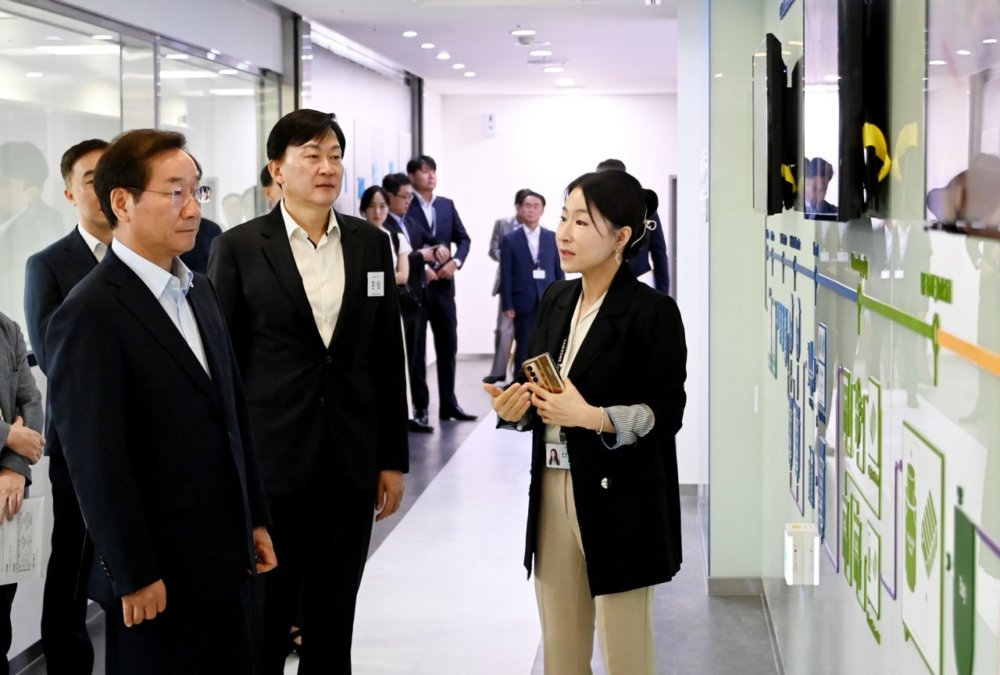
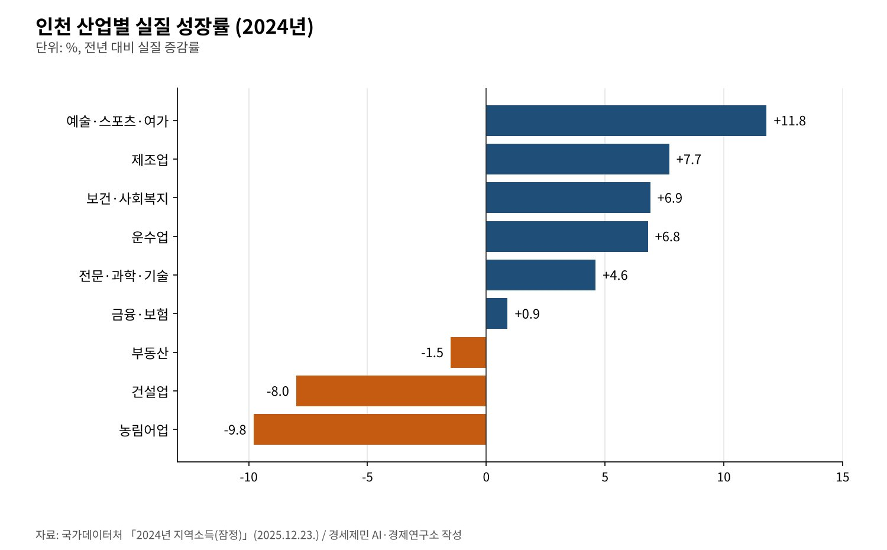
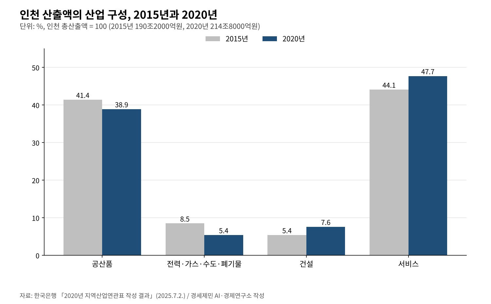

[인천 산업연관분석③] 공장은 더 만들고 일자리는 줄었다, 인천 산업의 두 얼굴
2024년 인천 제조업 실질 7.7% 성장, 2026년 8월 제조업 종사자는 1년 새 0.7% 감소
2020년 표 특화 1위는 운송서비스(입지계수 2.75), 자동차가 속한 운송장비는 상위 5위 밖
건설 두 해 연속 뒷걸음, 보건복지·운수·전문서비스가 성장 받쳐
AI경세제민=김갑봉 기자 | 2024년 인천 제조업은 실질 기준 7.7% 커졌다. 같은 해 건설업은 8.0%, 농림어업은 9.8% 줄었다. 국가데이터처가 2025년 12월 23일 낸 2024년 지역소득 잠정치다. 한 도시 안에서 산업마다 다른 해를 보냈다.
생산과 일자리도 다른 길을 걷는다. 고용노동부 사업체노동력조사를 보면 2026년 8월 인천 제조업 종사자는 21만9000명이다. 1년 전보다 1500명(0.7%) 줄었다. 같은 달 인천 전체 종사자는 99만명으로 2.5% 늘었다.
이 연재의 옛 원고는 2017~2022년 사업체조사로 입지계수와 변이할당분석을 직접 계산했다. 연구소 원칙에 따라 이 글은 그 추정을 쓰지 않는다. 한국은행과 국가데이터처, 고용노동부가 공표한 값만으로 다시 짚는다.

2024년, 산업마다 다른 성적표
2024년 인천의 실질 지역내총생산은 3.1% 늘었다. 제조업 7.7%, 운수업 6.8%, 보건·사회복지 6.9%, 예술·스포츠·여가 11.8%가 성장을 끌었다. 전문·과학·기술업도 4.6% 늘었다.
반대편에는 건설업(-8.0%), 부동산업(-1.5%), 농림어업(-9.8%), 광업(-4.1%)이 있다. 건설업은 2023년에도 10.1% 줄어 두 해 연속 뒷걸음쳤다. 지출 쪽에서도 건설투자가 9.5% 줄었고 설비투자는 4.2% 늘었다.

산업 구성도 바뀌었다. 인천 경제에서 광업·제조업 비중은 2023년 26.7%에서 2024년 28.2%로 커졌다. 서비스업은 63.5%에서 61.7%로, 건설업은 7.5%에서 6.6%로 줄었다. 명목 제조업 부가가치는 32조6470억원이다.
인천 제조업 성장의 내용도 공표됐다. 국가데이터처는 인천 광업·제조업이 전기·전자·정밀기기와 석탄·석유화학제품을 중심으로 늘었다고 설명했다. 경기 제조업(9.0%)과 함께 전국 광업·제조업 성장(4.2%)을 웃돌았다.
2015년에서 2020년, 공산품이 줄고 서비스가 늘었다
긴 흐름은 한국은행 지역산업연관표로 본다. 인천 총산출은 2015년 190조2000억원에서 2020년 214조8000억원으로 늘었다. 공산품 비중은 41.4%에서 38.9%로 줄고 서비스는 44.1%에서 47.7%로 늘었다.
전력·가스·수도·폐기물은 8.5%에서 5.4%로, 건설은 5.4%에서 7.6%로 움직였다. 공산품 비중 38.9%는 전국 평균 40.2%보다 낮다. 인천을 제조업 도시로만 부르기 어려워진 변화다.

일자리도 같은 방향이다. 전업환산 기준 인천 취업자는 2015년 113만8000명, 2020년 114만6000명이다. 공산품 취업 비중은 21.7%에서 18.6%로 줄었다. 서비스는 68.0%에서 69.5%로, 건설은 7.5%에서 9.1%로 늘었다.
특화 1위는 운송서비스, 자동차는 상위권 밖
입지계수는 한 산업이 전국보다 그 지역에 얼마나 몰렸는지 보여 준다. 1보다 크면 특화했다는 뜻이다. 한국은행이 공표한 2020년 인천 상위 5개 부문은 운송서비스, 전력·가스·증기, 기계·장비 순이다.
계수는 운송서비스 2.75, 전력·가스·증기 2.16, 기계·장비 1.61이다. 수도·폐기물(1.48), 목재·종이·인쇄(1.41)가 4·5위다. 공항과 항만, 발전소와 기계 공장이 인천의 특화를 만든다.
자동차가 들어 있는 운송장비는 인천 상위 5위에 없다. 운송장비가 상위권에 든 곳은 울산(4.82), 광주(2.99), 경남(2.74)이다. 의약품은 33개 대분류에서 따로 나오지 않아 이 표만으로는 바이오의 특화도를 읽을 수 없다.
옛 원고가 쓴 의약품 입지계수 3.733, 자동차 엔진 제조업 40.2% 감소 같은 값은 연구소가 사업체조사로 직접 계산한 수치였다. 공표 통계로 다시 확인하지 못해 이 글에서는 뺐다.
생산은 늘고 일자리와 임금은 따로 간다
2026년 8월 인천 제조업 종사자 21만9000명은 1년 전보다 0.7% 적다. 인천 전체 종사자는 2.5% 늘어 세종(3.1%), 제주(2.7%)에 이어 증가율 3위다. 늘어난 일자리는 주로 제조업 밖에서 나왔다.
임금은 뒤처졌다. 2026년 4월 인천 상용근로자 1인당 임금총액은 389만9000원이다. 1년 전보다 1.7% 줄었고 전국 평균 429만4000원보다 39만5000원 적다. 물가를 뺀 실질임금은 4.1% 줄었다.
고용노동부는 인천 상용근로자가 전국보다 제조업, 운수·창고업에 많고 전문·과학·기술, 정보통신업에 적다고 짚었다. 성장하는 산업과 임금이 높은 산업이 인천 안에서 겹치지 않는다는 신호다.
전국사업체조사로 보면 2024년 인천 사업체는 32만8477개로 1.9%, 종사자는 127만53명으로 0.9% 늘었다. 전국 종사자 증가율 1.1%보다 낮다. 2025년 조사 결과는 이 글을 쓴 10월 21일까지 확인하지 못했다.
두 얼굴을 잇는 법
첫째, 제조업 성장을 지역 일자리로 잇는 일이다. 전기·전자와 석유화학이 생산을 끌어도 인천 제조업 종사자는 줄었다. 설비가 늘어난 만큼 정비·설계·품질 같은 연관 일자리를 지역 안에 두는 계획이 필요하다.
둘째, 운송서비스 특화를 고부가 서비스로 넓히는 일이다. 입지계수 2.75의 물류 기반 위에 물류금융, 무역 데이터, 공급망 컨설팅을 얹어야 한다. 인천에 모자란 전문·과학·기술, 정보통신 일자리가 그 자리에서 나온다.
셋째, 건설 침체의 충격을 줄이는 일이다. 건설업은 두 해 연속 줄었고 건설투자 비중도 20.8%에서 17.9%로 낮아졌다. 건설 노동자의 전직 훈련과 생활 사회기반시설 정비가 고용의 완충 장치가 될 수 있다.
같은 인천 안에서 생산이 느는 산업과 일자리가 느는 산업이 다르다. 임금이 오르는 산업은 또 다르다. 이 셋을 하나로 묶을 때 성장의 몫이 인천에 남는다. 다음 편은 지역소득으로 인천에 남는 돈을 따진다.
참고문헌
기관 자료
- 국가데이터처, 「2024년 지역소득(잠정)」, 2025년 12월 23일. KDI 경제교육·정보센터 게재. https://eiec.kdi.re.kr/policy/materialView.do?num=275164
- 한국은행 경제통계2국 국민계정부 투입산출팀, 「2020년 지역산업연관표 작성 결과」(보도자료, 붙임 포함), 2025년 7월 2일. KDI 경제교육·정보센터 게재. https://eiec.kdi.re.kr/policy/materialView.do?num=268345
- 고용노동부, 「2026년 8월 사업체노동력조사 및 2026년 4월 시도별 임금·근로시간조사 결과」, 2026년 9월 30일. KDI 경제교육·정보센터 게재. https://eiec.kdi.re.kr/policy/materialView.do?num=287627
- 통계청, 「2024년 전국사업체조사 결과(잠정)」, 2025년 9월 23일. KDI 경제교육·정보센터 게재. https://eiec.kdi.re.kr/policy/materialView.do?num=271414
[사진 출처]
- [사진1] 인천광역시청 반도체바이오과, "Incheon Metropolitan City Mayor Yoo Jeong-bok visits Samsung BioLogics Incheon plant 20230822.png", 위키미디어 공용, 공공누리 제1유형. https://commons.wikimedia.org/wiki/File:Incheon_Metropolitan_City_Mayor_Yoo_Jeong-bok_visits_Samsung_BioLogics_Incheon_plant_20230822.png
※ 이 기사는 AI 프로그램 클로드를 활용해 작성했습니다.
관련기사
- [인천 산업연관분석②] 인천 중간재, 인천산은 4분의 1… 2020년 표로 다시 본 의존 구조
- [인천 산업연관분석④] 인천 지역내총생산 125조6000억원, 1인당은 전국의 83%
- [서평] 슘페터 『경제분석의 역사』 1권, 300년 전 질문이 오늘도 유효하다
- [서평] 『진보를 위한 주식투자』, 일하는 사람은 자본시장을 외면해도 되는가
저작권자 © AI경세제민 무단전재 및 재배포, AI학습 및 활용 금지